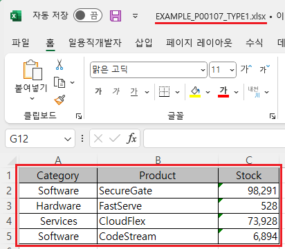
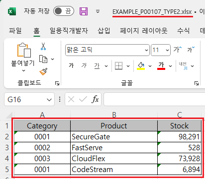
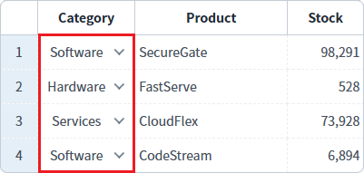
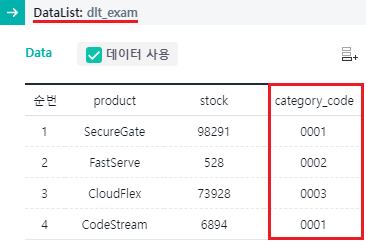

[GridView] 엑셀 다운로드 시 다운로드할 데이터 출처를 컬럼별로 설정하기
1개요
GridView의 'advancedExcelDownload' 메소드의 첫 번째 인자인 JSON 객체의 'convertIndex'을 사용하여, 특정 컬럼의 데이터를 GridView와 연결된 DataList에서 엑셀로 다운로드하는 예제입니다.
'convertIndex'에는 바디 컬럼의 인덱스를 문자열로 설정합니다. 여러 개의 인덱스를 설정할 때는 ','로 구분합니다. 설정한 인덱스에 해당하는 컬럼의 데이터는 'type' 옵션에 설정된 값과 반대로 적용됩니다. 예를 들어, 'type'의 값이 '1'로 지정된 경우, 'convertIndex'에 해당하는 컬럼은 'type'이 '0'으로 적용되어 DataList의 값으로 다운로드 됩니다.
2구현된 기능
엑셀 다운로드하기 - 기본 동작
엑셀 다운로드 - "Category" 컬럼만 DataList의 값으로 다운로드
3예제 테스트 방법
3.1엑셀 다운로드하기 - 기본 동작
1
STEP 1: '엑셀 다운로드 - 기본' 버튼을 클릭합니다.
2
STEP 2: 실행된 결과를 확인합니다.
다운로드 된 엑셀 파일 "EXAMPLE_P00107_TYPE1.xlsx"을 실행합니다.
GridView에 출력된 데이터와 동일하게 엑셀에 출력됩니다.
Image 1.다운로드된 엑셀(2021) 파일 예시

Image 2.GridView 예시

3.2엑셀 다운로드 - "Category" 컬럼만 DataList의 값으로 다운로드
1
STEP 1: '엑셀 다운로드 - "Category" 컬럼만 DataList의 값으로 다운로드' 버튼을 클릭합니다.
2
STEP 2: 실행된 결과를 확인합니다.
다운로드 된 엑셀 파일 "EXAMPLE_P00107_TYPE2.xlsx"을 실행합니다.
"Category" 컬럼의 값만 DataList의 데이터와 동일하게 엑셀에 출력됩니다.
Image 3.다운로드된 엑셀(2021) 파일 예시

Image 4.GridView 예시

Image 5.DataList의 Data 예시

4구현 예시
GridView와 연결된 DataList 생성 및 연결 방법은 생략되었습니다.
4.1엑셀 다운로드 - 컬럼별 type 지정하기
구현 방식은 엑셀 다운로드의 데이터 출처의 값을 지정하고, 지정한 기본 출처값와 반대로 지정할 컬럼의 index값을 지정하는 방식입니다.
GridView의 'advancedExcelDownload' 메소드를 사용하여 스크립트를 작성합니다. 세부 설정은 아래의 스크립트에 작성되었습니다.
Example 1.Script
//예제 파일의 스크립트 "scwin.btn_ex2_onclick"를 참고하세요. var jsnOptions = { fileName : "EXAMPLE_P00107_TYPE2.xlsx", //엑셀의 파일명 convertIndex : "0" //0번째 컬럼만 DataList의 값으로 다운로드. type 옵션의 기본 값은 1(GridView에 출력된 값)입니다. }; //convertIndex : [default: 없음] type이 "0" 또는 "1"인 경우, 특정 컬럼만 type이 "1" 또는 "0"인 데이터로 다운로드. type="1"인 상태에서 convertIndex="0,2"인 경우, index가 0,2인 컬럼은 컬름은 type="1"로 다운로드. //GridView "grd_exam1"의 엑셀 다운로드 실행 grd_exam1.advancedExcelDownload(jsnOptions);
5주요 API
advancedExcelDownload( options , infoArr )
options.type
options.convertIndex